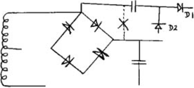

Micropower |
Volume 2 · Number 2 · April 1982 |
| Page 19 of 37 |
|---|
| 762 | END | ||
| 763 | ; * * * * * * * * * * * * * * * * * * * * * * * * * * * * * * * * * * * | ||
This completes the listing of the control software. A number of errors have come to light in the previous articles. The first is an error in the circuit diagram for the programmer power supply. The negative lead of the 470uP, 64V capacitor should connect to the bridge rectifier AC input, not to the positive output of the rectifier as shown.
Secondly, a link is missing from the vero layout. This is the link connecting pin 24 of the 2708 socket to the +5v supply. One may be fitted in a similar way to that on the 2716 socket.
Thirdly, a series of minor errors occurred in the listing. There was a superfluous right-hand bracket is assembler line number 144; it should read
| 144 | LD (ROMFLG), A |
Line 150 was omitted and line 149 was wrong; this section should read
| 149 | JR PROMPT | ||
| 150 | TYP2K | LD A, 08H | ; FLAG FOR 2K EPROM |
| 151 | LD (ROMFLG), A |
An incorrect address appeared in line 167; the correct address is 0A52H. In line 216 the label TEXT7 was given as TEXT17. In line 293 a superfluous WAIT2 occurred at the end of the line; this of course is the label for the delay loop on line 294
Finally, note 1 on page 20 of the last article could be expressed better as follows:–
| Page 19 of 37 |
|---|